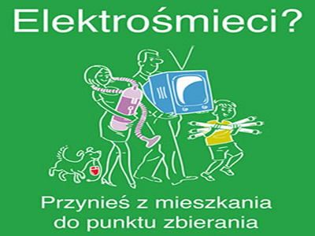
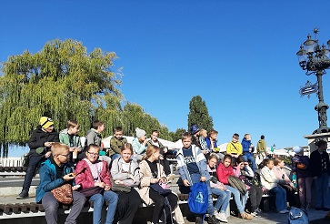

Szkoła Podstawowa nr 35 w Bydgoszczy im. Jarosława Dąbrowskiego
Szkoła Podstawowa nr 35 w Bydgoszczy im. Jarosława Dąbrowskiego
Aktualności
Zbiórka elektrośmieci w naszej szkole

Drodzy uczniowie i rodzice !!! Nasza szkoła przystąpiła do projektu “Wszystkie dzieci zbierają elektrośmieci”. Celem akcji jest podniesienie świadomości ekologicznej wśród dzieci i młodzieży, oraz zwrócenie uwagi na prawidłowe zagospodarowanie odpadami. W zamian za przyniesiony zużyty sprzęt elektroniczny i elektryczny szkoła otrzyma bon, który wykorzysta na nagrody rzeczowe w postaci materiałów biurowych. Jedynym warunkiem jest mobilizacja do działania, porządki domowe i chęci! Do akcji szkolnej mogą przyłączyć się również firmy i instytucje, które oddadzą zużyty sprzęt na rzecz wybranej szkoły.
Wycieczka historyczna klas 4b i 4c

7 października 2022 r uczniowie klasy 4b I 4c pod opieką nauczycieli w ramach lekcji historii odwiedzili Muzeum Okręgowe im L. Wyczółkowskiego w Bydgoszczy. Mogliśmy zapoznać się ze zbiorami archeologicznymi i dowiedzieć się o początkach naszego miasta. Karty pracy i warsztaty z tworzenia Bestiariuszy średniowiecznych pokazały, że mamy wiele ukrytych talentów i ogrom ciekawości w odkrywaniu przeszłości - podkreśla organizatorka wyprawy p.Ewa Jędrzejczak-Taranek.